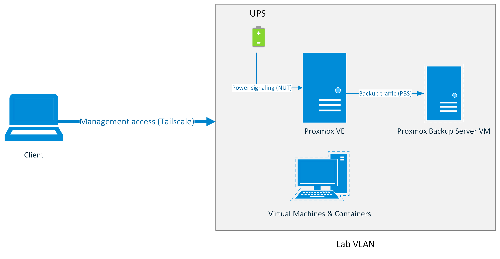

Remote Proxmox Server
A low-cost virtualization platform built for reliability, remote management, and real-world operational constraints.
Overview
This project began as an attempt to reduce friction in my daily lab workflow.
Running a lab on my primary desktop created constant tradeoffs. Spinning up multiple VMs required shutting down other applications, restarting VMs between sessions discouraged long-running projects, and keeping a high-performance desktop powered on 24/7 introduced heat, noise, and power concerns that were impractical in a dorm environment.
I set out to build a dedicated, always-on virtualization server that could host labs continuously, survive power events, and be fully managed remotely without physical access.
Core Objectives
- Reliable 24/7 VM hosting
- Strong data protection and recovery
- Remote out-of-band management
- Cost efficiency using repurposed hardware where possible
System Design and Constraints
Rather than purchasing used enterprise hardware, I focused on maximizing performance per dollar while implementing enterprise-like reliability and management features.
- CPU: AMD Ryzen 9 3950X. High core count for virtualization with acceptable power consumption and heat output. Required no additional investment, as it was already obtained for a prior project.
- RAM: 64 GB ECC DDR4. Chosen explicitly to reduce silent data corruption risk with ZFS.
- Storage:
- 2x NVMe SSDs for boot drives. One for Proxmox VE, one for Proxmox Backup Server
- 3x 1 TB NAS-rated SATA SSDs in RAIDZ1 for VM storage
- 2x 4TB HDDs in ZFS mirror dedicated to backup storage
- UPS: APC Back-UPS series for affordability and strong community support.
- Out-of-Band Management: JetKVM and Tailscale for remote access and troubleshooting.
Architecture
Platform Selection and Early Friction
This project was originally scoped around Hyper-V Server.
In practice, running Hyper-V in a workgroup environment introduced persistent friction. Windows Admin Center required domain services for meaningful management and MMC required unreliable WinRM and CredSSP workarounds. That proved to be a chore for macOS clients and inconvenient for off-site management.
Proxmox VE offered:
- Platform-agnostic management infrastructure
- First-class ZFS support
- Robust backup tooling
- A strong documentation and community ecosystem
Switching platforms reduced administrative overhead and enabled a more appliance-like server model.
Installer Compatibility Issue
During initial deployment, the graphical Proxmox installer failed during early driver initialization due to a known NVIDIA compatibility issue. Installation was completed in text mode using a documented workaround.
Storage Architecture and Data Integrity
Virtual machine storage is hosted on a ZFS RAIDZ1 pool backed by NAS-grade SSDs.
RAIDZ1 was selected to balance cost, storage efficiency, and acceptable performance for lab workloads. Given the relatively small pool size, ECC memory, and regular ZFS scrubbing, this tradeoff was considered appropriate for the system’s intended use.
Snapshots are used heavily for experimentation and rollback during lab work.
Backup Strategy and Recovery
Rather than relying solely on Proxmox's built-in backup tooling, I deployed Proxmox Backup Server as a VM with a dedicated storage pool. The OS and backup disks are passed directly through to the PBS VM using stable disk identifiers. This allows the entire PBS VM to be migrated to bare metal or another system if the host fails catastrophically.
Access Control and Least Privilege
PBS access from Proxmox VE is performed using a dedicated service account with only the 'DataStoreBackup' role assigned. This enforces least-privilege access.
Backup Characteristics
- Incremental, deduplicated backups
- Daily snapshots with longer retention for recent data
- Weekly and monthly retention for historical recovery points
- Automated verification and garbage collection
Known Tradeoff
Virtualizing the backup server introduces a shared failure domain, which I explicitly acknowledge. This tradeoff was accepted to ship a working system quickly, with plans to move PBS to dedicated hardware in a future revision.
Remote Management and Out-of-Band Access
Remote access was a hard requirement from the start.
- Out-of-Band management: JetKVM provides hardware-level access to UEFI, bootloader, display, and ISO mounting.
- Secure Remote Access: Tailscale, backed by a yubikey and Passkey login, provides encrypted remote access without exposing services publicly.
- In-band management: Proxmox web UI and SSH for routine administration.
Lab traffic is separated from home traffic using a dedicated VLAN.
Power Management and Graceful Shutdown
As this server is hosted remotely, power loss was one of the most important failure modes to handle correctly.
Using Network UPS Tools in a server-client configuration, the UPS communicates with the Proxmox host and signals an orderly shutdown sequence during extended outages.
Integration Challenge
Initial NUT configuration failed due to USB device permission and service ownership issues. Community documentation highlighted common pitfalls when running NUT on Proxmox VE. Aligning udev rules and service permissions resolved the issue and ensured clean and reliable NUT driver initialization.
Outcomes:
- Virtual machines shut down cleanly
- Backup jobs terminate safely
- The host powers off last, protecting ZFS integrity
Shutdown timing and battery thresholds were tuned based on observed runtime rather than defaults.
UPS status is also surfaced through HomeKit via a Homebridge container, providing at-a-glance visibility into power state.
Validation and Testing
To ensure reliability beyond initial configuration, key failure scenarios were validated:
- UPS-triggered shutdowns
- Verified backup restore functionality from Proxmox Backup Server
- Tested remote recovery using JetKVM during host reboots
What I Learned
This project reinforced that technical success often comes from choosing the path with the least long-term friction, not the one that looks best on paper or easiest to get running.
Pivoting away from an all-Windows stack improved reliability and manageability, even though it required deeper Linux administration and research. Documentation, community knowledge, and troubleshooting skills were invaluable.
Most importantly, I learned that failure is a natural part of the learning process, and that it's important to be willing to pivot and try new things.
What I'd Do Differently
- Native IPMI: A motherboard with built-in BMC would simplify telemetry and reduce reliance on external hardware.
- Simplified Remote Network Access: A dedicated Tailscale subnet router would reduce per-host configuration overhead.
- Dedicated Backup Server: My one true regret. Separating PBS onto a dedicated, low-power system would remove the shared failure domain.
Future Roadmap
- Active Directory lab environment
- Isolated cybersecurity and DFIR sandboxes
- Potential local AI workloads as hardware prices improve
Conclusion
This project represents a transition from ad-hoc experimentation to deliberate system design.
By repurposing hardware, embracing open-source tooling, and prioritizing recoverability, I built a platform that mirrors many of the operational realities of enterprise infrastructure at a personal scale.
This system now serves as a stable foundation for coursework, security labs, and future enterprise-focused experimentation.